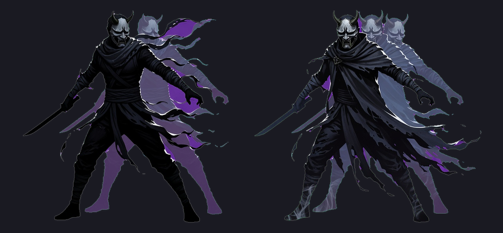
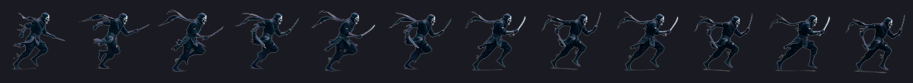

手搓廣告遊戲選集 · 吸血鬼復仇 · build 46
build 46 標題會寫「🧪 測試版・全解鎖」，八隻角色全開、轉職打三下就跳。 影忍也做完了。另外：出貨檢查裡那條查 VR_SHOTS 的，其實從來沒驗到任何東西。
新的 VR_TESTUNLOCK define，跟 VR_SHOTS 一樣是編譯期開關。
正式包裡 VrTestUnlock.On 是常數 false，整段會被消掉——不是「有但不執行」，是不存在。
測試包做四件事：
| 角色 | 全部 8 隻解鎖（實測 define 開 → 8/8、關 → 1/8） |
| 轉職任務 | 門檻壓到 3，每個職業幾分鐘內就會被提供。任務種類不變——測到的還是那個職業本來的觸發條件 |
| 提供順序 | 專屬職業排在通用職業前面。不然選了道士，先跳出來的是血族領主那三個，要一直按拒絕才輪到因果法師 |
| 標記 | 選單標題寫死 🧪 吸血鬼復仇（測試版・全解鎖） |
標記那一條不是裝飾：沒有它，測試包跟正式包在畫面上長得一模一樣， 有人拿到會以為「正式版就是全解鎖」，回報的問題也會對不上。
出這一包的時候發現的。硬檢查裡有：
grep -c 'VR_SHOTS' Classes/Preprocessor.h # 要 0
它永遠是 0——Preprocessor.h 是 Unity C++ trampoline 的標頭，
裡面是 PLATFORM_IOS、UNITY_USES_*、SDK 版本那些，
C# 的 scripting define 從來不會出現在裡面。
會抓到是因為這次刻意開著 VR_TESTUNLOCK 出包：
Preprocessor.h 裡兩個 define 都查不到，可是那一包確實是全解鎖的。
換句話說，如果哪一版真的漏開著 VR_SHOTS，這條檢查一樣會顯示 0 然後放行。
正確做法：C# 的字串常數會被 IL2CPP 收進 global-metadata.dat，
查「只有那個 define 打開才存在的字串」：
IPA 內的 [VRSHOT]（VR_SHOTS 的探針前綴）: 0 ✓ 正式驗證碼確實不在包裡
IPA 內的「全解鎖」（測試版標題） : 1 ⚠️ 這是測試包，刻意的
已修進 upload-testflight skill 與 invariants.md 第 13 條。
上傳後也把 iOS 的 define 關回去了，下一版不會誤帶。
ASC 上最新是 45 → 這次 46 版本 2.2
四個檢查點：匯出 2.2/46 → 封存 2.2/46 → IPA 2.2/46 → ASC 46 VALID

每 12 秒凝聚一個影分身（3 個，殘影宗師 5 個），快被打到時分身替你消失。
HurtBy 這個唯一的受傷入口。 跟月嚎將的「不能回血」擋在 Heal
同一個道理：傷害來源有接觸、遠程、自爆、地帶、魔王技能、亡靈……
逐個接一定會漏，而且以後新增一種又要記得處理。完全沒擊殺（2 → 2）的情況下，24 秒生出 3 個分身 ✓ 靠時間不靠擊殺
第 1 下（20 傷害）：分身 3 → 2 血 100 → 100 ✓ 分身替你擋掉
第 2 下：分身 2 → 1 血 100 → 100 ✓
第 3 下：分身 1 → 0 血 100 → 100 ✓
第 4 下：分身 0 → 0 血 100 → 80 ✓ 分身用完了，真的會痛
轉職殘影宗師 → 分身上限 5 替身時炸開 ✓

美術只花 $0.84（立繪 + 奔跑 12 幀 + 攻擊 8 幀）。
分身本身零美術成本——沿用玩家自己的走路幀染成半透明藍灰，
跟亡靈的 ApplyWraithLook 同一個做法。
先講現況：九個職業裡其實已經有四個是機制專屬的（受傷次數、法術擊殺、 成陣次數、替身次數）。真正千篇一律的是這四個：
| 職業 | 現在 | 提議改成 | 為什麼呼應機制 |
|---|---|---|---|
| 血族領主 | 擊殺 400 | 本局回復的生命累計達 2 倍最大生命 | 它的本體是吸血與續戰，不是殺得多 |
| 亡者牧者 | 擊殺 600 | 僕從累計打死 150 隻 | 這個職業的重點是「別人替你殺」 |
| 絕域獵手 | 遠處擊殺 200 | 累計 120 秒身邊 180 單位內沒有敵人 | 它獎勵的是保持距離，不是遠處殺得多 |
| 月嚎將 | 低血擊殺 150 | 累計在低血狀態下存活 90 秒 | 它獎勵的是待在那個狀態，不是那時候殺幾隻 |
順便再調兩個：
| 職業 | 現在 | 提議 |
|---|---|---|
| 暗影行者 | 存活 5:36 | 本局閃避 25 次（它給 15% 閃避） |
| 血鎖裁判 | 受傷 30 次 | 用反傷打死 15 隻（反傷才是它的本體，受傷只是前提） |
元素使／因果法師／殘影宗師維持原樣——法術擊殺、成陣次數、替身次數 本來就是各自的機制。
技術上全部是同一個模式：一個獨立計數器，跟 formations／substitutes 一樣，
而且都不依賴已經有那個職業（月嚎將那個坑不會再踩）。
大概半小時的工作量，等你點頭就做。
| 會移動 | 會死 | 本質 | |
|---|---|---|---|
| 屍語者的僕從 | 會追敵人 | 會 | 一支軍隊 |
| 影忍的分身 | 跟著你 | 替你死 | 你的替身 |
| 浮游砲 | 鎖在你身上繞 | 不會死 | 你身體的延伸 |
RequiresCharacter = "witch"）軸：現有六個是反應式／數量／狀態／空間／時機／轉嫁，這個是覆蓋—— 不靠走位就把你的有效範圍撐大。
環繞的機制已經有了——聖光書與聖光守護陣就是 Orbit 家族，
每幀算角度、繞著玩家轉。新的只有「從法輪的位置開火」而不是從玩家位置，
而 VrWeapons 的開火函式本來就吃一個 pos 參數。
成本量級：程式小；美術約 $0.52（法輪圖示併一張彙整圖 $0.20 ＋ 光束特效 $0.32）。
TestFlight build 46（2.2），選單標題會寫「🧪 測試版・全解鎖」。 八隻角色全開，轉職任務打三下就會跳。
→ 上一頁：選不到的角色與會飛的弓